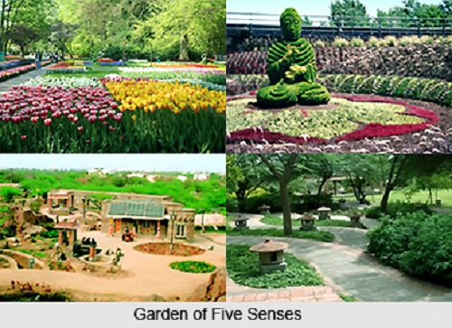

The Garden of Five Senses is not just a park, it is a space with a variety of activities, inviting public interaction and exploration. The project, developed by Delhi Tourism Transportation Development Corporation, was conceptualized to answer to the city's need for leisure space for the public, for people to socialize and unwind. Such spaces add atmosphere and life to a city and cater to all sections of the society.
The twenty-acre site, located at Said-Ul-Azaib village, close to the Mehrauli heritage area in New Delhi, is spectacular. The Garden was inaugurated in February 2003. Majestic rocks stand silhouetted against the sky, others lie strewn upon the ground in a casual yet alluring display of nature's sculptural genius. It was the ideal ground on which to realize the concept of a public leisure space that would awaken a sensory response and thereby a sensitivity to the environment.
Soaring stainless-steel birds mounted on slate-clad pillars welcome you into the park. An expansive plaza, set on the natural slope of the site, invites you up the spiral walkway. Across, a troop of elephants, cut in stone, regaling in a water bath, tempts exploration.
The garden itself is divided into distinct areas. On one side of the spiral walkway is the Khas Bagh, a formal garden patterned on the lines of the Mughal Garden. Slow-moving water cascades in channels along its length, while flowering and fragrant shrubs and trees line its paths. The Central axis leads to a series of fountains, some of which are lit up by fibreoptic lighting systems. Encapsulating the expression here is the sculpture of 'A Fountain Tree".
There are Colour Gardens - beautiful compositions of flowering shrubs and ground covers that have you looking at familiar plants with new eyes. The Courts of Specimen Plants display not so frequently seen species - of bamboo, for instance, or cactii, or herbs.
The Garden has been designed to the imagery suggested by the name Garden of Five Senses. Colour, fragrances, texture and form all come together in an evocative bouquet that awakens the mind to the beauty of life and invokes a grateful prayer for the gift of sight, sound, touch, smell and taste.